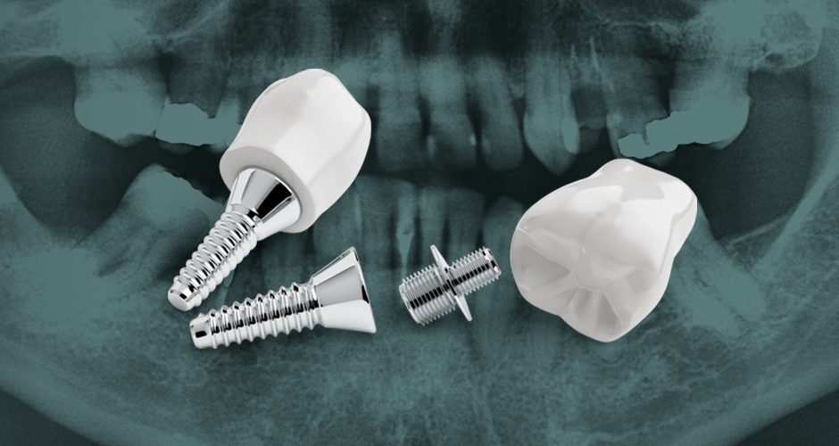
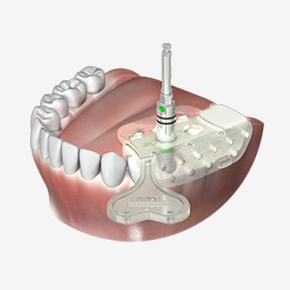
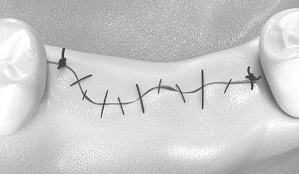
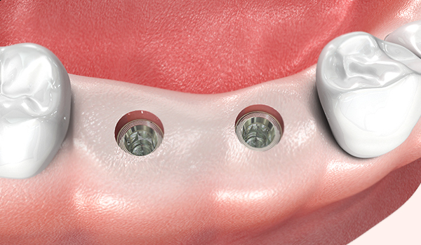
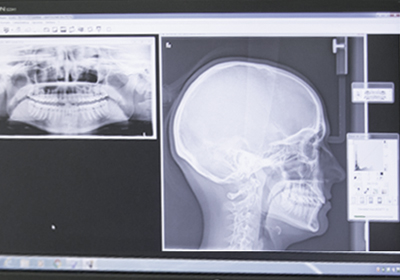
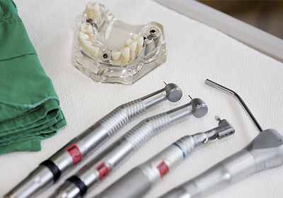
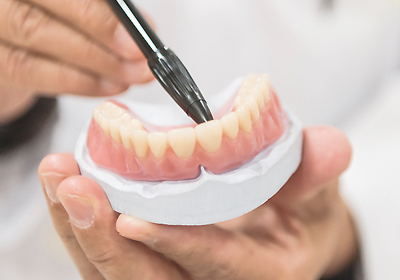
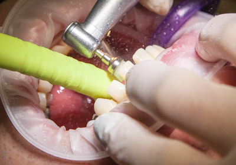
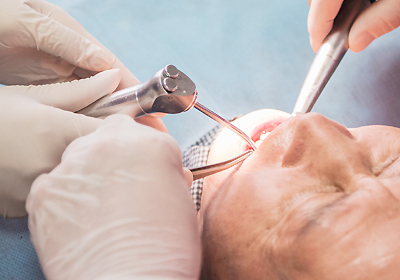

정밀 치아 진단
3차원 CT촬영을 통해
환자의
전반적인 구강상태와
신경구조물까지 파악
<%=m_client_en%>
치료 전 과정을 디지털로 진행하며 수술 전 3D 컴퓨터로 모의 수술을 통해
개인의 구강구조와 잇몸뼈에 맞게 식립 위치와 각도, 깊이까지 파악이 가능합니다 .
골조직, 신경 위치 등을 정확히 파악하여 빠르고 안전한 최적의 수술경로를 찾아줍니다.

최근 각광받고 있는 것이 네비게이션 임플란트입니다.
네비게이션 원리를 이용한 최신 수술법으로
환자의 골조직, 신경위치를 3D로 파악하여 디지털 네비게이션 안내에 따라
환자에게 적합한 시술 경로를 찾아 임플란트를 식립하는 방법입니다.
자동차가 네비게이션 안내에 따라 정확하게 길을 찾듯이
최적의 수술 경로를 찾아 골 조직과 신경 위치 등을 정확히 파악하여
빠르고 안전한 최적의 수술경로를 찾아줍니다.

네비가이드를 이용해 수술 전에 환자에게
꼭 맞는 맞춤형 지대주와 치아가 사전 제작되어
하루만에 수술이 가능합니다.
가상 모의 시술로 임플란트를 잇몸 뼈가
가장 단단한 곳에 식립될 수 있도록
최적의 위치를 결정하여 수술합니다.
환자별 맞춤 네비가이드 장치로
잇몸을 절개하지 않고도 수술계획의 1mm 오차도 허용하지 않는
정밀 수술로 부담을 최소화합니다.
정확한 진단과 1시간 내의 짧은 시술시간으로 붓기나 통증을 최소화하여
어르신 또는 전신질환자에게 더욱 안성맞춤입니다.
(당뇨병, 고혈압, 심장질환 등)

절개가 필요한 일반적인 임플란트 수술은 출혈, 붓기로 인한 통증과
불편함이 동반되고 염증과 감염이 발생 할 수 있습니다.

절개를 하지 않는 임플란트 수술은 붓기와 출혈이 적어 수술 후
통증이 거의 없고 염증과 감염 위험이 적어 회복이 매우 빠릅니다.

3차원 CT촬영을 통해
환자의
전반적인 구강상태와
신경구조물까지 파악

3차원 CT촬영 결과로
컴퓨터상으로
충분한
모의수술 과정

임플란트 식립 위치,
각도, 깊이 등을
정확히 이해한 디자인

진단 결과에
맞는 수술 유도장치
준비

디자인 결과에 따라
정확한
시술 진행